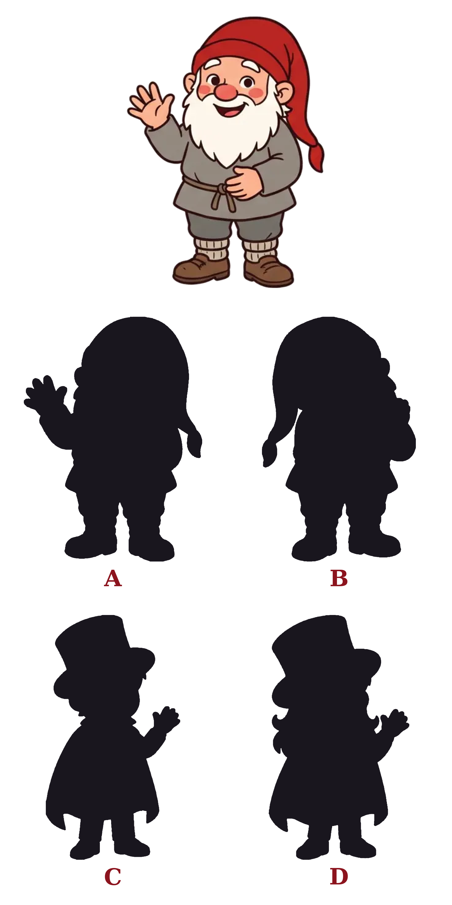
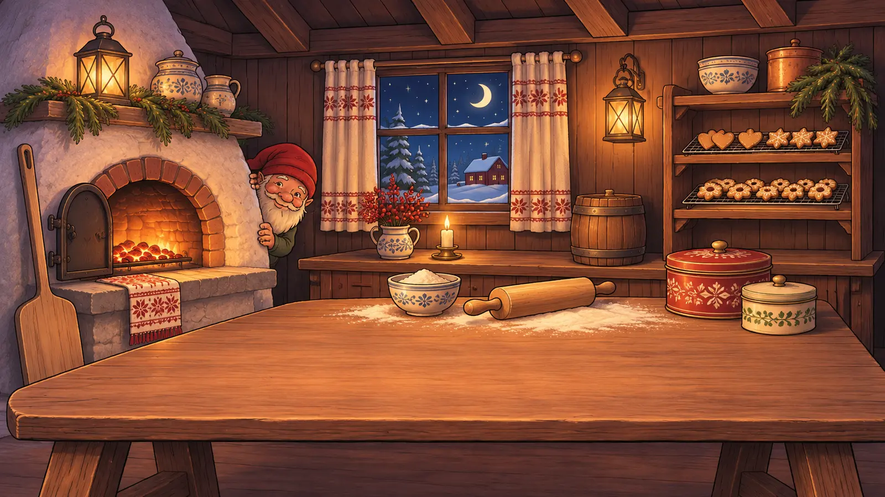
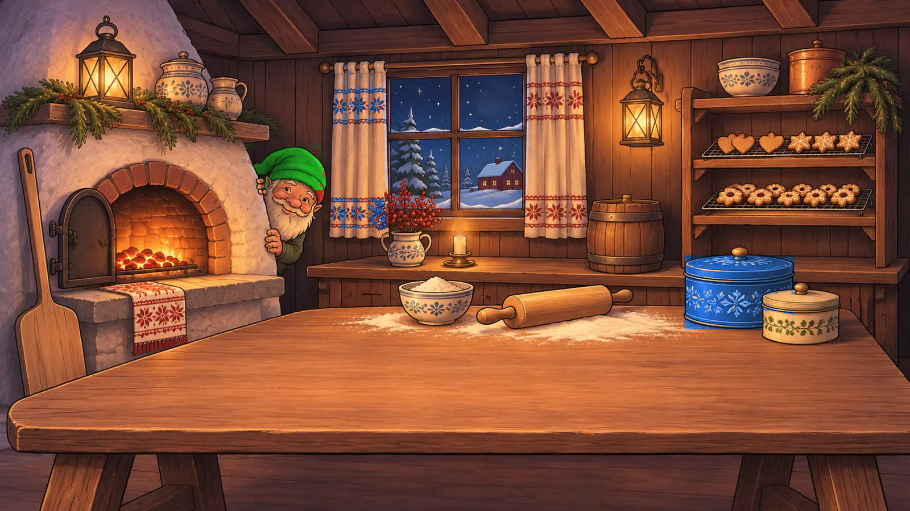
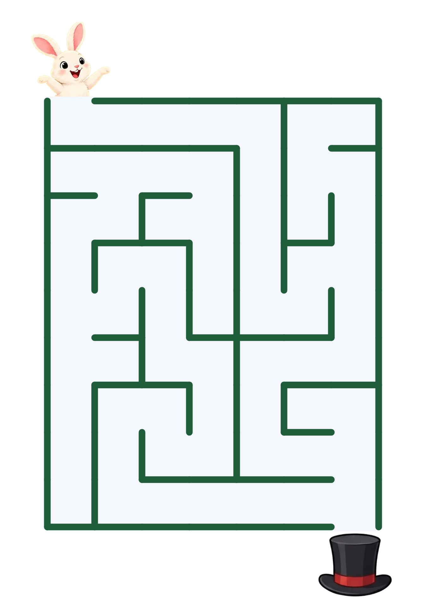
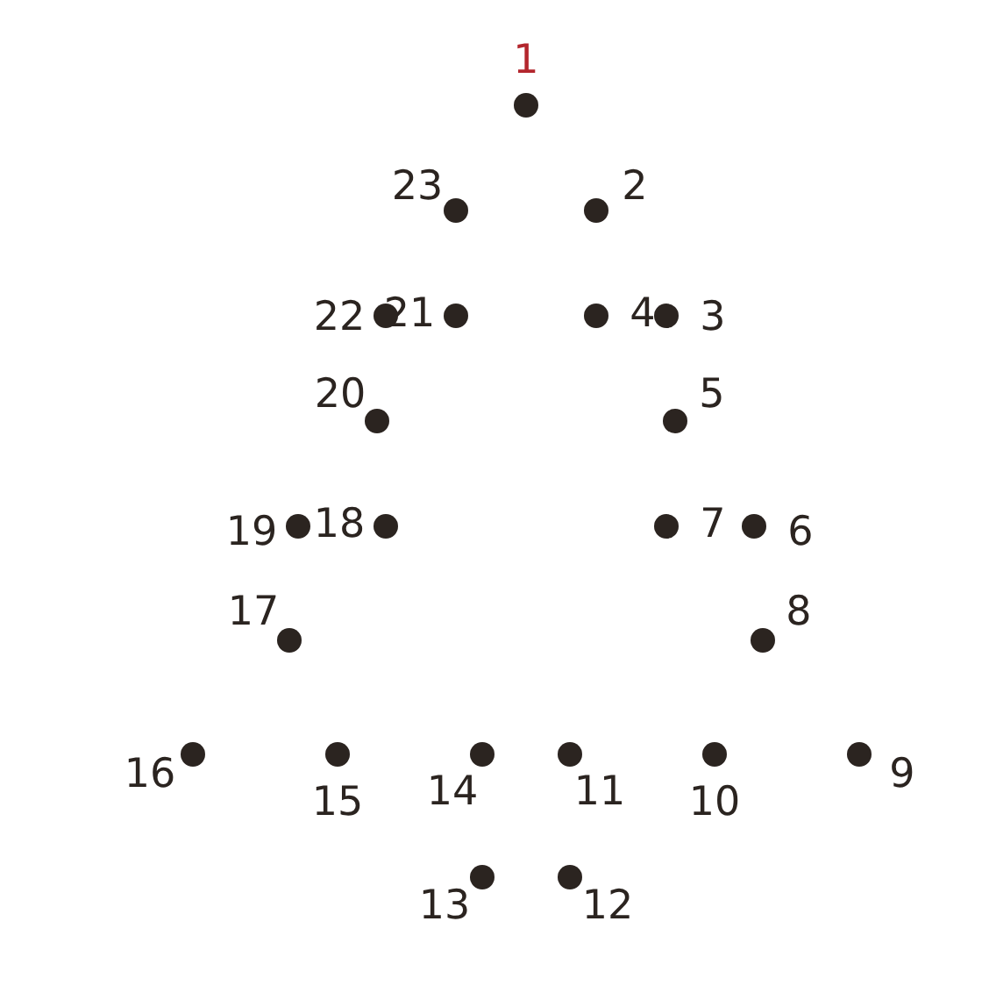
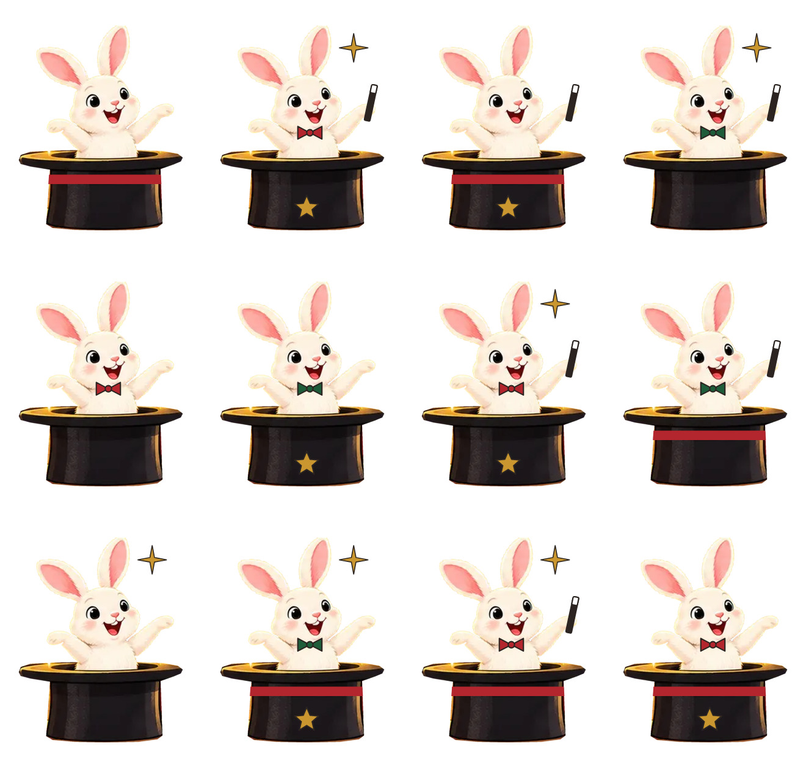
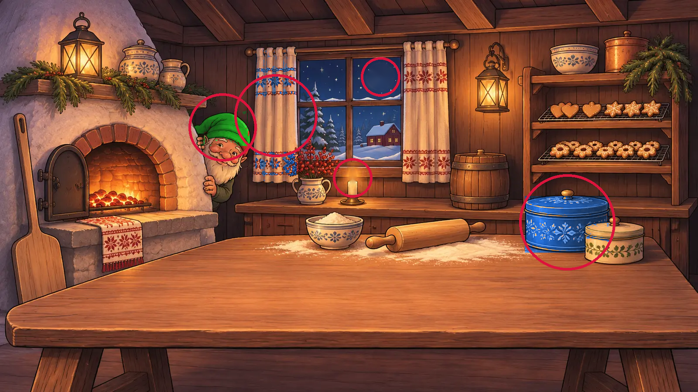
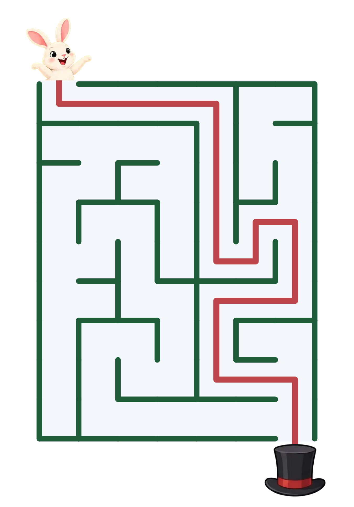
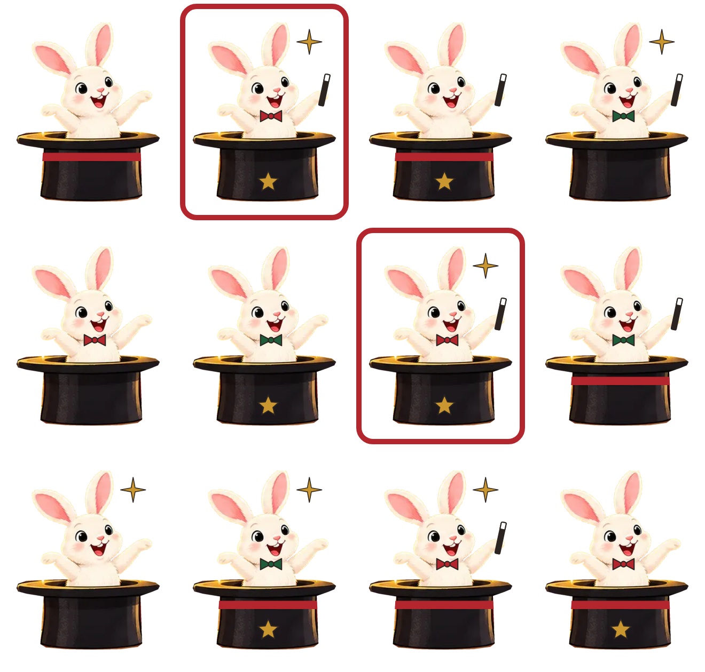

1Finn nissens skygge
Nissen har mistet skyggen sin. Hvilken av de svarte skyggene er hans?

Tryllemuseet · Jul 2026
Kaninens julejakt
Hjelp tryllekaninen, nissen, Tiril og Trym!
Nissen har mistet skyggen sin. Hvilken av de svarte skyggene er hans?

Bildene i bakstehuset er nesten like. Finner du de 5 forskjellene?


Kryss av for hver feil du finner: ○ ○ ○ ○ ○
Tryllekaninen skal hjem i hatten før jul. Finn veien!

Start på den røde 1-eren og tegn videre til 23. Hva blir det? Fargelegg etterpå!

Bare to av kaninene er helt like. Se på sløyfen, hatten og stjernen!

Tegn deg selv med tryllehatt og tryllestav. Hva tryller du fram?
For voksne, eller for den som har prøvd skikkelig først.



Skyggen: A. Prikk til prikk: et juletre.
Lær ekte tryllekunster sammen med Tiril, Trym og nissen.
tryllemuseet.no/barn/tryllegarden
Årvoll gård, Årvollveien 35, 0590 Oslo · tryllemuseet.no